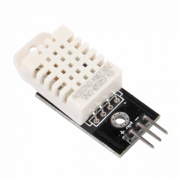
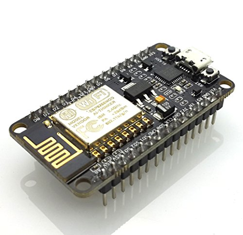

Martin Braun, Jörg Broy,
Leonard Franke und Richard Lüdtke
1. Motivation
2. Design decisions
3. Getting data
4. Adding extensions
5. Future work
Own web platform for small internet-of-things devices
Sensor DHT22
NodeMcu
